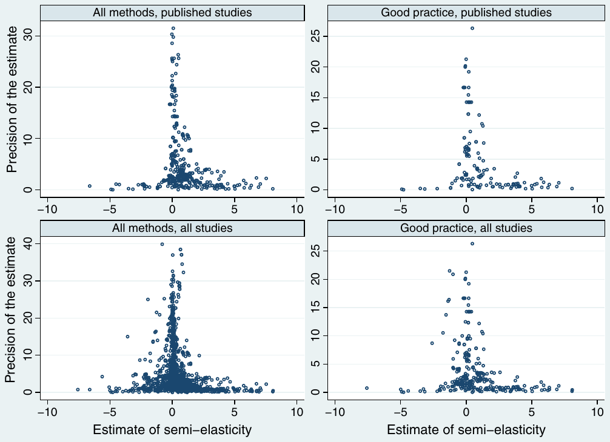

Estimating Vertical Spillovers from FDI: Why Results Vary and What the True Effect Is
Tomas Havranek & Zuzana Irsova (2011), "Estimating Vertical Spillovers from FDI: Why Results Vary and What the True Effect Is." Journal of International Economics, 85(2), pp. 234-244. https://doi.org/10.1016/j.jinteco.2011.07.004.
Tomas Havranek a,b,*, Zuzana Irsova b
a Czech National Bank, Economic Research Department, Czech Republic
b Charles University, Institute of Economic Studies, Prague, Czech Republic
Article history: Received 1 July 2010; Received in revised form 18 July 2011; Accepted 20 July 2011; Available online 27 July 2011
JEL classification: C83, F23
* Corresponding author at: Czech National Bank, Czech Republic. E-mail addresses: t.havranek@gmail.com, tomas.havranek@ies-prague.org (T. Havranek).
Abstract
In the last decade, more than 100 researchers have examined productivity spillovers from foreign affiliates to local firms in upstream or downstream sectors. Yet results vary broadly across methods and countries. To examine these vertical spillovers in a systematic way, we collected 3626 estimates of spillovers and reviewed the literature quantitatively. Our meta-analysis indicates that model misspecifications reduce the reported estimates and journals select relatively large estimates for publication. No selection, however, was found for working papers. Taking these biases into consideration, the average spillover to suppliers is economically significant, whereas the spillover to buyers is statistically significant but small. Greater spillovers are received by countries that have underdeveloped financial systems and are open to international trade. Greater spillovers are generated by investors who come from distant countries and have only a slight technological edge over local firms.
Keywords: Foreign direct investment, Productivity, Spillovers, Meta-analysis, Publication selection bias
1. Introduction
Few topics in international economics have been examined as extensively as productivity spillovers from foreign affiliates to domestic firms. The evidence for spillovers had been mixed until Javorcik (2004a) redirected the attention of researchers from horizontal (within-sector) to vertical (between-sector) spillovers. Since then, there has been a virtual explosion of studies on vertical spillovers, and empirical research in this area is still growing at an exponential rate with more than a score of studies published in the last two years alone. A consensus has emerged that spillovers from foreign affiliates to their suppliers in host countries are positive and significant, yet the estimated size of these spillovers varies broadly. The point estimates of the economic effect of backward linkages reported by the two best known studies, Javorcik (2004a) and Blalock and Gertler (2008), differ by the order of magnitude: Javorcik (2004a) found the effect 30 times greater. Moreover, following the methodology of Javorcik (2004a) and Blalock and Gertler (2008), many other studies conducted for different countries have found insignificant or even negative spillover effects. But despite the striking heterogeneity in the literature, no systematic survey has been done.
To take a step beyond single-country case studies and establish robust evidence for spillover effects, we employ the meta-analysis methodology (Stanley, 2001). Meta-analysis, the quantitative method of research synthesis, has been commonly used in economics for two decades (Card and Krueger, 1995; Smith and Huang, 1995; Card et al., 2010). Recent applications of meta-analysis in international economics include Disdier and Head (2008) on the effect of distance on trade, Cipollina and Salvatici (2010) on reciprocal trade agreements, and Havranek (2010) on the trade effect of the euro. Meta-analysis is more than a literature survey: it sheds light on the determinants of the examined phenomenon that are difficult to investigate in primary studies because of data limitations. For example, within our meta-analysis framework, we show it is possible to examine the predictions of the theoretical model by Rodriguez-Clare (1996) which implies that spillovers to host-country suppliers increase with larger communication costs between the foreign affiliate and its headquarters, and decrease with greater differences between the host and source countries in terms of the variety of intermediate goods produced. To test these hypotheses empirically we take the advantage of 57 vertical spillover studies providing estimates for many countries and different types of investors.
In comparison with previous meta-analyses on productivity spillovers (Görg and Strobl, 2001; Meyer and Sinani, 2009), this paper concentrates on vertical instead of horizontal spillovers. We include many more estimates to investigate the full variability in the literature: 3626 compared with 25 (Görg and Strobl, 2001) and 121 (Meyer and Sinani, 2009). To our knowledge, this makes our paper the largest meta-analysis conducted in economics so far. Moreover, the previous meta-analyses on spillovers used the reported t-statistics to evaluate the statistical significance of spillovers, whereas we use an economic measure of spillovers and employ new synthesis methods. Thus, we are able to estimate the net spillover effect beyond publication bias and misspecifications that are corrected by some studies.
The remainder of the paper is structured as follows: Section 2 briefly describes how spillovers are estimated and explains how we collected the estimates. Section 3 examines the extent of publication selection in the literature. Section 4 introduces variables assumed to explain heterogeneity in vertical spillovers. Section 5 examines how spillover estimates are affected by these variables, and quantifies the underlying effect beyond publication bias and misspecifications. Section 6 concludes.
2. The spillover estimates data set
Studies on foreign direct investment (FDI) spillovers usually examine the correlation between the productivity of domestic firms and their linkages with foreign affiliates.1 With an allusion to the production chain, the linkages are usually classified into horizontal (within-sector: from FDI to local competitors) and vertical (between-sector); vertical linkages are further bifurcated into downstream (backward: from FDI to local suppliers) and upstream (forward: from FDI to local buyers). Most researchers use data from one country and estimate a variant of the following model, the so-called FDI spillover regression:
where i, j, and t denote firm, sector, and time subscripts; and Controls denote a vector of either sector- or firm-specific control variables. The variable Horizontal is the ratio of foreign presence in firm i's own sector, Backward is the ratio of firm i's output sold to foreign affiliates, and Forward is the ratio of firm i's inputs purchased from foreign affiliates. Because firm-level data on linkages with foreign affiliates are usually unavailable the vertical linkages are computed at the sector level: Backward becomes the ratio of foreign presence in downstream sectors, Forward becomes the ratio of foreign presence in upstream sectors; the weight of each upstream or downstream sector is determined by the input–output table of the country.
Since the dependent variable of Eq. (1) is in logarithm and the linkage variables are ratios, the estimates of coefficients , , and can be interpreted as semi-elasticities and thus constitute the natural common metric for the economic effect of spillovers. Semi-elasticities approximate the percentage increase in the productivity of domestic firms following an increase in the foreign presence of one percentage point:
For instance, the estimate of backward spillovers would imply that a 10-percentage-point increase in foreign presence is associated with a 1% increase in the productivity of domestic firms in upstream sectors. The estimates are directly comparable across studies that use the log-level specification. Within this basic framework, however, researchers use different methodologies and data sets, which cause substantial differences in results. We address these differences in Section 4 by introducing variables that capture method heterogeneity.
A vast majority of the recent studies on FDI spillovers concentrate on vertical linkages, and vertical linkages are also the main focus of this paper. The two previous meta-analyses on horizontal spillovers, however, could not have used the recently developed meta-analysis methods and did not attempt to estimate the spillover effect implied by the literature. For this reason, additionally we present a partial meta-analysis of horizontal spillovers. In the partial meta-analysis, we include only those semi-elasticities that are estimated in the same regression with vertical spillovers.
We employed the following strategy for literature search: After reviewing the references of literature surveys (Görg and Greenaway, 2004; Smeets, 2008; Meyer and Sinani, 2009) and a few recent empirical studies, we elaborated a baseline search query that was able to capture most of the relevant studies. The baseline search in EconLit yielded 108 hits. Next, we searched three other Internet databases (Scopus, RePEc, and Google Scholar) and added studies that were missing from the baseline search. Finally, we investigated the RePEc citations of the most influential study, Javorcik (2004a). The three steps provided 183 prospective studies, which were all examined in detail. The last study was added on 31 March 2010.
Studies that failed to satisfy one or more of the following criteria were excluded from the meta-analysis. First, the study must report an empirical estimate of the effect of vertical linkages on the measure of the productivity of domestic firms. Second, the study must define vertical linkages as a ratio. Third, the study must report information on the precision of estimates (standard errors or t-statistics), or authors must be willing to provide it. Most of the identified studies, although related to the FDI spillover literature, did not estimate vertical spillovers. We also excluded a few studies that estimated vertical spillovers but did not define linkages as a ratio and thus could not be used to compute the semi-elasticity (for example, Kugler 2006; Bitzer et al., 2008). We often had to ask the authors for sample means of linkage variables or for clarification of their methodology: about 20% of the studies could only be included thanks to cooperation from the authors.2 No study was excluded on the basis of language, form, or place of publication; we follow Stanley (2001) and rather err on the side of inclusion in all aspects of data collection. We therefore also use studies written in Spanish and Portuguese, Ph.D. dissertations, articles from local journals, working papers, and mimeographs; and control for study quality in the analysis. A detailed description of the studies included in the analysis, as well as the complete list of excluded studies (with reasons for exclusion) are available in an online appendix at http://meta-analysis.cz/spillovers.
Following the recent trend in meta-analysis (Disdier and Head, 2008; Doucouliagos and Stanley, 2009; Cipollina and Salvatici, 2010), we use all estimates reported in the studies. If we arbitrarily selected the “best” estimate from each study, we could introduce an additional bias, and if we used the average reported estimate, we would discard a lot of information. Because the coding of the literature involved the manual collection of thousands of estimates with dozens of variables reflecting study design, to eliminate errors both of us collected all data independently. The simultaneous data collection took three months and the resulting disagreement rate, defined as the ratio of data points that differed between our data sets, was 6.7% (of more than 200,000 data points). After we had compared the data sets, we reached a consensus for each discordant data point. The retrieved data set with details on coding for each study is available in the online appendix.
A few difficult issues of coding are worth discussing. To begin with, some studies (3.7% of the observations; for instance, Girma and Wakelin, 2007) use the so-called regional definition of vertical spillovers. Researchers using the regional definition approximate vertical linkages by the ratio of foreign firms in the region, without using input–output tables. Such an approach does not distinguish between backward and forward linkages. Because the results are interpreted as vertical productivity spillovers from FDI, we include them in the analysis but create a dummy variable for this aspect of methodology. Next, many researchers use more variables for the same type of spillover in one regression. For example, Javorcik (2004a) separately examines the effect of fully owned foreign affiliates and the effect of investments with joint foreign and domestic ownership. Since the distinction between those coefficients is economically important, we use both of them and create dummies for affiliates with full foreign ownership, partial ownership, and for more estimates of the same type of spillover taken from one regression. Finally, some studies report coefficients that cannot be directly interpreted as semi-elasticities. This concerns, most notably, specifications different from the log-level (1.7% of the observations); for these different specifications we evaluated semi-elasticities at sample means. Other studies use the interactions of linkage variables with other variables, typically absorption capacity (7.2% of the observations). Instead of omitting those estimates, we evaluate the marginal effects of foreign presence at sample means and control for this aspect in the multivariate analysis.
The resulting data set includes 3626 estimates of semi-elasticities taken from 57 studies. The median number of estimates taken from one study is 45, and for each estimate we codified 55 variables reflecting study design. To put these numbers into perspective, consider Nelson and Kennedy (2009), who review 140 meta-analyses conducted in economics. They report that a median analysis includes 92 estimates (the maximum is 1592) taken from 33 primary studies and uses 12 explanatory variables (the maximum is 41).
The oldest study in our sample was published in 2002 and the median study in 2008: in other words, a half of the studies was published in the last three years, which suggests that vertical spillovers from FDI are a lively area of research. The whole sample receives approximately 400 citations per year in Google Scholar, which further indicates the popularity of FDI spillover regressions. The median time span of the data used by the primary studies is 1996–2002, and all the studies combined use almost six million observations from 47 countries. While we cannot exploit the full variability of these primary observations, we benefit from the work of 107 researchers who have analyzed these data thoroughly. The richness of the data sets and methods employed enables us to systematically examine the heterogeneity in results and to establish robust evidence for the effect of foreign presence on domestic productivity.
Several estimates of semi-elasticities do remarkably differ from the main population and remain so even after a careful re-checking of the data; a similar observation applies to the precision of the estimates (the inverse of standard error). Such extreme values, most of which come from working papers and mimeographs, might lead to volatile results and degrade the graphical analysis. To account for outliers, some other large meta-analyses use the Grubbs test (Disdier and Head, 2008; Cipollina and Salvatici, 2010). But because we use precision to filter out publication bias, outlying values in precision could also invalidate the results. Thus, to detect outliers jointly in the semi-elasticity and its precision, we use the multivariate method of Hadi (1994). By this procedure, run separately for each type of spillover, 4.87% of the observations are identified as outliers. It is worth noting that some researchers argue for using all observations in meta-analysis (Doucouliagos and Stanley, 2009). Nevertheless, under the assumption that better-ranked outlets publish more reliable results, the estimates identified here as outliers are of lower quality compared to the rest of the sample,3 and although in the remainder of the paper we report the results for the data set without outliers, the inclusion of outliers does not affect the inference.
3. The importance of publication bias
An arithmetic average of the results reported in the literature will be a biased estimate of the true spillover effect if some results are more likely than others to be selected for publication. Publication selection bias, which has long been recognized as a serious issue in empirical economics research (DeLong and Lang, 1992; Card and Krueger, 1995; Ashenfelter and Greenstone, 2004; Stanley, 2005), arises from the preference of editors, referees, or authors themselves for results that are statistically significant or consistent with the theory.
If the spillover literature is free of publication bias, the reported estimates of semi-elasticities (spillover effects) will be randomly distributed around the true effect. If, in contrast, some estimates fall into the “file drawer” (Rosenthal, 1979) because they are insignificant or have an unexpected sign, the reported estimates will be correlated with their standard errors. For instance, if a statistically significant effect is required, an author who has a small data set may run a specification search until the estimate becomes large enough to offset the high standard errors. Hence, publication bias manifests as a systematic relation between the reported effects and the corresponding standard errors (Card and Krueger, 1995; Ashenfelter et al., 1999):
where denotes the reported estimate of a semi-elasticity, denotes the true spillover effect, measures the strength of publication bias, is the standard error of , and is a normal disturbance term. The true spillover () in this specification is already corrected for publication bias: the bias is “filtered out” since can be thought of as the average spillover effect conditional on the estimates' standard errors being close to zero. The correction for publication bias is analogical to taking the uncorrected estimate (the arithmetic average of spillover coefficients) and subtracting the estimated publication bias (the estimate of times the average standard error of spillover coefficients).
Because Eq. (3) is heteroscedastic by definition (the explanatory variable is a sample estimate of the standard deviation of the dependent variable), in practice it is usually estimated by weighted least squares (Stanley, 2005; Stanley, 2008):
Note that now the dependent variable changes to the t-statistic of the estimate of a semi-elasticity, the constant measures publication bias, and the slope coefficient measures the true semi-elasticity. Eq. (4), often called the “meta-regression,” has a convenient interpretation: if the true semi-elasticity () is zero and if only positive and significant estimates of spillovers are reported, the estimated coefficient for publication bias () will approach two, the most commonly used critical value of the t-statistic. Therefore, values of close to two would signal extreme publication bias and would be consistent with the case when all studies reported positive and significant estimates of spillovers, but the true spillover was zero. Monte Carlo simulations and many recent meta-analyses suggest that Eq. (4) is effective in filtering out publication bias and estimating the true effect (Stanley, 2008).
Since we use more than one estimate of spillovers from each study, it is important to take into account that estimates within one study are likely to be dependent (Disdier and Head, 2008). Therefore, Eq. (4) is likely to be misspecified. A common remedy is to employ the mixed-effects multilevel model, which allows for within-study dependence or, in other words, unobserved between-study heterogeneity (Doucouliagos and Laroche, 2009; Doucouliagos and Stanley, 2009):
where i and j denote estimate and study subscripts. The overall error term now consists of study-level random effects () and estimate-level disturbances (). Regression results are reported in Table 1 in three panels, one panel for each type of spillover. In Column 1 estimates collected from all studies, published and unpublished, are included in the regressions. The constants in these regressions are insignificant, which suggests that all types of spillover are free of publication bias if both unpublished and published studies are considered together. This is surprising because publication bias has been found in most areas of economics research even for results collected from working papers (Doucouliagos and Stanley, 2008). If there was publication selection in journals and authors were rationally maximizing the probability of publication, they might polish even preliminary versions of their papers.
When we only consider estimates from studies published in peer-reviewed journals (Column 2 of Table 1), we detect publication bias for backward spillovers, but not for forward and horizontal spillovers. Although the test for publication bias among the estimates of backward spillovers is only significant at the 10% level (p-value= 0.055), the evidence for publication bias is solid considering that this test is known to have low power (Egger et al., 1997; Stanley, 2008); Egger et al. (1997) explicitly recommends employing the more liberal 10% level of significance when using this test.
The magnitude of the coefficient for publication bias in published results on backward spillovers is approximately 1.1, which signals strong selection efforts: recall that values close to two would be associated with extreme publication bias, and the value found here is considered “substantial” in the survey of economics meta-analyses by Doucouliagos and Stanley (2008). An important finding is that the selection is more prominent among the results that are deemed to be more important (backward spillovers) than among the bonus results (forward and horizontal spillovers). Indeed, since the results concerning backward spillovers determine the main message of the study, they are more likely to be polished.
| Dependent variable: t-statistic of the estimate of spillover | All estimates | Published estimates | Homogeneous estimates |
|---|---|---|---|
| Panel A – Backward spillovers | |||
| Publication bias | |||
| Constant | − 0.0255 | 1.083* | − 1.481 |
| (0.496) | (0.656) | (0.942) | |
| Spillover effect corrected for bias | |||
| 1/(Standard error of the estimate of spillover) | 0.168*** | 0.178*** | 0.307*** |
| (0.0241) | (0.0295) | (0.0380) | |
| Observations | 1311 | 370 | 568 |
| Studies | 55 | 26 | 39 |
| Panel B – Forward spillovers | |||
| Publication bias | |||
| Constant | 0.729 | − 0.437 | 1.657 |
| (0.776) | (1.033) | (1.632) | |
| Spillover effect corrected for bias | |||
| 1/(Standard error of the estimate of spillover) | 0.0872*** | 0.258*** | 0.0669** |
| (0.0287) | (0.0454) | (0.0288) | |
| Observations | 1030 | 241 | 591 |
| Studies | 44 | 19 | 30 |
| Panel C – Horizontal spillovers | |||
| Publication bias | |||
| Constant | 0.363 | 0.512 | 0.818 |
| (0.295) | (0.498) | (0.500) | |
| Spillover effect corrected for bias | |||
| 1/(Standard error of the estimate of spillover) | 0.00466 | 0.0137 | 0.000549 |
| (0.00722) | (0.00837) | (0.0127) | |
| Observations | 1154 | 305 | 471 |
| Studies | 52 | 27 | 37 |
Notes: The table contains the results of Eq. (5): . Estimated by the mixed-effects multilevel model using restricted maximum likelihood. “Homogeneous estimates” denote spillover estimates taken from specifications that use firm-level panel data, log-level regression, and the standard definition of spillover variables. p < 0.01, p < 0.05, p < 0.10. Standard errors in parentheses.
The importance of publication bias for inference concerning the magnitude of spillovers is best demonstrated by comparing the average uncorrected and corrected spillover effect. The arithmetic average of all published estimates of backward spillovers is 0.88. In contrast, the corrected spillover effect based on estimates from published studies (resulting from the meta-regression reported in Column 2 of Panel A in Table 1) is only 0.178. In other words, because of publication bias the average estimate of spillovers reported in peer-reviewed journals is exaggerated fivefold. This simple example shows how dangerous it is to ignore publication bias; therefore, we will correct for the bias throughout the analysis.4
The estimated effects corrected for publication bias (the slope coefficients reported in Table 1) are consistently positive and significant across all specifications for backward and forward spillovers, but for horizontal spillovers the effect is not significantly different from zero. To get a flavor of the likely magnitude of backward and forward spillovers before turning to more advanced analysis, we prefer to use a more homogeneous subset of data that only consists of estimates which come from firm-level panel-data studies, which use the standard definition of spillover variables, and for which no additional computation was needed (Column 3 of Table 1). These preliminary estimates suggest an effect of 0.307 for backward spillovers and 0.067 for forward spillovers. In other words, a 10-percentage-point increase in foreign presence is on average associated with a 3.1% increase in the productivity of domestic firms in upstream sectors. For domestic firms in downstream sectors the increase in productivity is only 0.7%.
In sum, when we account for publication bias and unobserved heterogeneity, the literature suggests that backward spillovers are economically important, forward spillovers are statistically significant but small, and horizontal spillovers are insignificant. Nevertheless, these results are averaged across all countries and methods, and we need multivariate analysis to explain the vast differences in the reported estimates. The estimates may depend systematically on misspecifications or other quality aspects of primary studies. In the following sections, focusing only on backward spillovers as the most important spillover channel, we will estimate the effect implied by best-practice methodology and describe spillover determinants.
4. What explains differences in spillover estimates
To investigate whether there is a systematic pattern of heterogeneity in the spillover literature, we augment Eq. (3) with variables that may potentially influence the reported magnitude of spillovers. Again as in Section 3 we divide the resulting equation by the standard error of the spillover estimates to correct for heteroscedasticity and add the random-effects component to account for within-study dependence. The multivariate meta-regression then takes the following form (Doucouliagos and Stanley, 2009; Cipollina and Salvatici, 2010):
where is the vector of variables potentially influencing spillover estimates, and represents the true effect, corrected for publication bias, in the reference case (): that is, is conditional on the values of variables x.
As a robustness check of the mixed-effects multilevel model used to estimate Eq. (6), OLS with standard errors clustered at the study level is usually employed (Disdier and Head, 2008; Doucouliagos and Laroche, 2009). The principal problem with OLS in meta-analysis is that it gives each estimate the same weight, which causes studies reporting lots of estimates to become overrepresented. The mixed-effects multilevel model, in contrast, gives each study approximately the same weight if the between-study heterogeneity is high (Rabe-Hesketh and Skrondal, 2008, p. 75). We report both models, although the mixed-effects model is preferred.
We explore two potential general sources of heterogeneity. First, since previous meta-analyses on horizontal spillovers (and economics meta-analyses in general) often find that reported results are systematically affected by study design, we explore how the use of different methods affects spillover estimates. We label this source of systematic differences in reported estimates method heterogeneity. Second, we test the implications of the theoretical model by Rodriguez-Clare (1996) and investigate other potential determinants of spillovers suggested in the recent literature (Crespo and Fontoura, 2007; Smeets, 2008; Meyer and Sinani, 2009), although these are often connected to the Rogriguez-Clare mechanism as well. We label such real differences in the underlying spillover coefficients structural heterogeneity.
Table A1 in the Appendix presents the descriptions and summary statistics for all variables assumed to explain method and structural heterogeneity. Variables explaining method heterogeneity are divided into four blocks: data characteristics represent properties of the data used, specification characteristics represent the basic design of the tested models, estimation characteristics represent the econometric strategy, and publication characteristics represent the differences in quality not captured by the data and method variables. Variables explaining structural heterogeneity are divided into three blocks: host-country characteristics represent aspects of the country for which the particular spillover coefficient was estimated, foreign-firm characteristics are dummy variables representing properties of the firms used to compute linkages, and local-firm characteristics represent the sector of local firms that were included in the spillover regression.
4.1. Method heterogeneity
4.1.1. Data characteristics
Following Görg and Strobl (2001) we include dummy variables for cross-sectional data and aggregation at the sector level, even though more than 90% of the estimates come from firm-level panel-data studies. Because the size of data sets used by primary studies varies substantially, we control for the number of years and firms to find out whether smaller studies report systematically different outcomes. We include the average year of the data period to control for possible structural changes in the effects of FDI. Finally, because a large part of studies on European countries use data from the same source (the Amadeus database), we include a corresponding dummy variable.
4.1.2. Specification characteristics
We construct dummies for the inclusion of forward and horizontal spillover variables in the same regression with backward spillovers, the proxy for foreign presence (most studies use share in output, others share in employment or equity), the subset of firms used for the estimation of spillovers (whether all firms or only domestic are included), the inclusion of important control variables (sector competition and demand in downstream sectors), the control for absorption capacity, and the use of a lagged, instead of a contemporaneous, linkage variable.
4.1.3. Estimation characteristics
Although the majority of studies use total factor productivity (TFP) as the measure of productivity, some estimate spillovers in one step using output, value added, or labor productivity as the dependent variable. When computing TFP, most authors take into account the endogeneity of input demand and use the Levinsohn–Petrin or Olley–Pakes method, but 10% of all estimates are computed using OLS. In the second step, TFP is regressed on the linkage variable, and the estimation is usually performed using firm fixed effects. We create dummies for random effects and pooled OLS as well as for the inclusion of year and sector fixed effects. Approximately a half of the regressions are estimated in differences. A general-method-of-moments (GMM) estimator is employed by 9% of the regressions, and the translog production function instead of the Cobb–Douglas function is employed by 8% of them.
4.1.4. Publication characteristics
To control for the different quality of studies, we include a dummy for publication in peer-reviewed journals, the recursive RePEc impact factor of the outlet, the number of Google Scholar citations of the study discounted by study age, and the number of RePEc citations of the co-author who is most frequently cited. We also include a dummy variable for studies where at least one co-author is “native” to the examined country; we consider authors to be native if they either were born in the examined country or obtained an academic degree there. Such researchers are more familiar with the data used; on the other hand, they may have vested interests in the results. To account for any systematic difference between the results of researchers affiliated in the USA (for our sample it usually means highly ranked institutions) and elsewhere, we add a dummy for studies where at least one co-author is affiliated with a US-based institution. Finally, publication date (year and month) is included to capture the publication trend: possibly the advances in methodology that are difficult to codify in any other way.
Although we have additionally codified other variables reflecting methodology (among others the degree of aggregation of the linkage variable and the number of input–output tables used), the variation in these variables is too low to bring any useful information.
4.2. Structural heterogeneity
4.2.1. Host-country characteristics
The theoretical model of Rodriguez-Clare (1996) indicates that positive backward spillovers are more likely to occur when the costs of communication between the foreign affiliate and its headquarters are high and when the source and host country of FDI are not too different in terms of the variety of intermediate goods produced. As suggested by Rodriguez-Clare (1996), the costs of communication between the foreign affiliate and its headquarters can be approximated by the distance between the host and source countries of FDI, and country similarity can be approximated by the difference in the level of development. Both implications have an intuitive interpretation: On the one hand, investors from distant countries are likely to use more local inputs since it is expensive for them to import inputs from home countries; on the other hand, investors from much more developed countries are likely to use less local inputs since local firms are often unable to produce intermediate goods that would comply with the quality standards of the investors. A higher share of local inputs indicates more linkages with local firms and a greater potential for knowledge transfer.
To create a variable that would reflect the distance between the host country and its source countries of FDI, we need each country's geographic decomposition of inward FDI stocks—but such information is not always directly available. Therefore, as a first step, we use decompositions of outward FDI positions of OECD countries provided by the OECD's International Direct Investment Statistics. (For this and all other host-country characteristics, we select values from 1999, the median year of the data used in primary studies.) In 1999, OECD countries accounted for more than 85% of the world stock of outward FDI. We additionally obtain data from the statistical offices of the next three most important source countries of FDI: Hong Kong, Taiwan, and Singapore, which increases the total coverage to 95%. Having information on the destination of 95% of all outward FDI stock in the world, we are able to reconstruct the geographic decompositions of inward FDI stock with high precision for all 47 countries that have been examined in the spillover literature.
It is necessary to take into account that some authors already separate the linkage effects of investors of different nationalities; for example, many studies on China separate ethnic Chinese investors (Hong Kong, Macao, Taiwan) from Western investors. Similarly, Javorcik and Spatareanu (2011) use separate linkage variables for European, American, and Asian investors to examine backward spillovers to Romanian firms.
The data on distances come from the CEPII database (www.cepii.org) and are computed following the great circle formula. The distance variable is then calculated using the decompositions of inward FDI as weights. For example, if 70% of inward FDI stock in Mexico originated in the USA, 20% in Germany, and 10% in Korea, the average distance of foreign affiliates in Mexico from their headquarters would be 0.7 ⋅ 1600 + 0.2 ⋅ 9500 + 0.1 ⋅ 11700 = 4190 km. We employ a similar approach to calculate the average technology gap of host countries with respect to the stock of inward FDI, measuring the development of the country as GDP per capita. The source of the data, similar to all remaining host-country characteristics with the exception of patent rights, is the World Bank's World Development Indicators.
Another important determinant of spillovers is the international experience of domestic firms, which we approximate by the trade openness of the country. Firms with international experience may benefit more from backward linkages since they are used to trading with foreign firms and, for example, have employees with the necessary language skills. Such firms have a higher capacity to absorb spillovers. Firms exposed to international competition are also more likely to produce intermediate goods required by foreign affiliates, and hence, in line with the Rodriguez-Clare mechanism, benefit from greater spillovers.
As a major precondition of positive spillovers, many researchers stress the financial development of the host country (Javorcik and Spatareanu, 2009; Alfaro et al., 2010): if domestic firms have difficulty obtaining credit, they react rigidly to the demand of foreign affiliates, and the sluggish response can result in fewer linkages. On the other hand, if the inflow of FDI eases the existing credit constraints of domestic firms by bringing in scarce capital (Harrison et al., 2004), better credit terms reflect in higher productivity, and the benefits of FDI are more important in countries with tougher credit constraints. We approximate the development of the financial system by the ratio of private debts to GDP.
Countries with weak protection of intellectual property rights are likely to attract relatively low-technology investors (Javorcik, 2004b). If a smaller technology gap contributes to more linkages because of the Rodriguez-Clare mechanism, then the effect of weak intellectual property protection on spillovers may be positive. To approximate the protection of intellectual property, we choose the Ginarte-Park index of patent rights; the source of the data is Walter G. Park's website and Javorcik (2004b).
4.2.2. Foreign-firm characteristics
The next structural variables are dummies capturing the degree of foreign ownership used to define foreign presence. Many researchers argue that fully owned foreign affiliates create fewer spillovers compared with joint foreign and domestic projects (Javorcik and Spatareanu, 2008) since joint projects will arguably use technology that is more accessible to domestic firms.
4.2.3. Local-firm characteristics
Some authors estimate spillovers separately for service sectors, which allows us to test the hypothesis that firms in services, compared with manufacturing firms, are less likely to benefit from linkages. Firms in services may lack international experience since they exhibit lower export propensity.
5. Results of the multivariate meta-regression
We begin the multivariate analysis by including all explanatory variables introduced in Section 4 into the regression. This general model with 36 method and 8 structural variables is not reported, but is available on request. For method variables, in contrast to structural variables, no theory exists that would determine which of them are important and what sign they should have. Thus, to obtain a more parsimonious model, we employ the Wald test and exclude the method variables that are jointly insignificant at the 10% level, but keep all structural variables. We always include method and structural variables together in the regressions, but for ease of exposition report the results separately: the results for method variables are reported in Table 2 and the results for structural variables in Table 3.
In the specification reported in Column 1 of both tables all structural variables are included. The specifications in Columns 2 and 3 omit some of them to avoid the relatively high correlations between some host-country characteristics, but the coefficients do not change a lot. Two structural variables are insignificant in Columns 1–3. Excluding these variables yields our preferred model reported in Column 4; that is, the model without redundant variables. This model is then re-estimated using OLS with standard errors clustered at the study level (Column 5). A few method and structural variables become somewhat less significant when OLS is used (their new p-values range between 0.1 and 0.2), but many of them would become significant at standard levels when country-level instead of study-level clustering was used for OLS.
5.1. Method heterogeneity
Table 2 shows that seventeen variables reflecting the characteristics of the data, specification, estimation, and quality are significant, suggesting that results of spillover regressions depend on study design in a systematic way. The results are affected by the level of aggregation, age, and source of the data. The omission of the standard control variables (sector competition, downstream demand), the definition of the dependent variable, and the method of computing TFP matter.
Furthermore, we find an upward trend in the results: other things equal, the use of new data increases the reported semi-elasticity by 0.03 each year. Concerning quality characteristics, unpublished studies report estimates that are systematically lower by 0.28 compared with published studies; frequently cited studies also report higher spillovers.
| Dependent variable: t-statistic of the estimate of spillover | 1-ME | 2-ME | 3-ME | 4-ME | 5-OLS |
|---|---|---|---|---|---|
| Constant | 0.397 (0.375) | 0.242 (0.396) | 0.339 (0.378) | 0.385 (0.371) | 0.670** (0.298) |
| 1/Se | 2.785* (1.643) | −2.890*** (0.523) | 4.250*** (0.952) | 1.293 (1.190) | 1.554 (1.563) |
| Data characteristics | |||||
| Aggregated data | 1.206*** (0.145) | 1.213*** (0.140) | 1.224*** (0.145) | 1.193*** (0.144) | 1.187*** (0.190) |
| Average year of data | 0.0349*** (0.00789) | 0.0236*** (0.00719) | 0.0277*** (0.00754) | 0.0323*** (0.00763) | 0.0301*** (0.00837) |
| Amadeus database | −0.686*** (0.0950) | −0.489*** (0.0855) | −0.861*** (0.0874) | −0.680*** (0.0946) | −0.603*** (0.127) |
| Specification characteristics | |||||
| Foreign presence in employment | −0.168* (0.0929) | −0.149* (0.0825) | −0.131 (0.0930) | −0.158* (0.0921) | −0.323* (0.171) |
| Control for sector competition | −0.315*** (0.0673) | −0.353*** (0.0664) | −0.368*** (0.0655) | −0.333*** (0.0649) | −0.306*** (0.106) |
| Control for downstream demand | 0.567*** (0.0995) | 0.487*** (0.0985) | 0.581*** (0.0944) | 0.596*** (0.0967) | 0.615*** (0.192) |
| Estimation characteristics | |||||
| One-step estimation | −0.348*** (0.0783) | −0.302*** (0.0788) | −0.304*** (0.0779) | −0.353*** (0.0780) | −0.447*** (0.137) |
| Olley–Pakes | −0.318*** (0.0824) | −0.305*** (0.0827) | −0.324*** (0.0802) | −0.346*** (0.0794) | −0.464*** (0.154) |
| OLS | −0.388*** (0.102) | −0.349*** (0.102) | −0.354*** (0.102) | −0.400*** (0.101) | −0.587*** (0.173) |
| Pooled OLS | 0.155*** (0.0430) | 0.174*** (0.0430) | 0.150*** (0.0433) | 0.155*** (0.0430) | 0.221*** (0.0429) |
| Sector fixed effects | 0.119*** (0.0401) | 0.140*** (0.0380) | 0.135*** (0.0393) | 0.128*** (0.0393) | 0.117* (0.0617) |
| Estimated in differences | 0.107* (0.0578) | 0.0415 (0.0568) | 0.0211 (0.0543) | 0.0989* (0.0569) | 0.0583 (0.0674) |
| Publication characteristics | |||||
| Published | 0.276*** (0.0786) | 0.273*** (0.0798) | 0.274*** (0.0777) | 0.283*** (0.0782) | 0.407*** (0.0958) |
| Study citations | 0.0799** (0.0324) | 0.0878*** (0.0323) | 0.108*** (0.0320) | 0.0820** (0.0322) | 0.0421 (0.0281) |
| Native co-author | 0.449*** (0.0626) | 0.466*** (0.0634) | 0.389*** (0.0562) | 0.461*** (0.0617) | 0.449*** (0.0522) |
| Author citations | −0.0682*** (0.0190) | −0.0574*** (0.0152) | −0.0752*** (0.0185) | −0.0739*** (0.0184) | −0.0266 (0.0214) |
| Publication date | 0.0669** (0.0270) | 0.0476** (0.0239) | 0.105*** (0.0252) | 0.0756*** (0.0261) | 0.0503 (0.0351) |
| Pseudo | 0.39 | 0.36 | 0.38 | 0.40 | 0.46 |
| Observations | 1308 | 1308 | 1311 | 1311 | 1311 |
| Studies | 55 | 55 | 55 | 55 | 55 |
Notes: The table contains the results of regression Eq. (6). Structural variables are included in all specifications and reported in Table 3. Column 1: all structural variables are included. Column 2: Technology gap, Financial development, and Fully owned subsidiaries are excluded. Column 3: Distance to source countries, Trade openness, and Patent rights are excluded. Columns 4 and 5: Patent rights and Partially owned subsidiaries are excluded. All explanatory variables are described in detail in Table A1. ME = mixed-effects multilevel model. OLS = ordinary least squares with standard errors clustered at the study level. ***p<0.01, **p<0.05, *p<0.10. Standard errors in parentheses.
By the definition of FDI spillover regressions most researchers assume that the semi-elasticity is constant across different values of foreign presence. In other words, an increase in foreign presence from 0% to 10% is assumed to have a similar effect on domestic producitivity as an increase from 90% to 100%; the impact of FDI is linear. To test the soundness of this assumption we would ideally need data on mean foreign presence for each specification, but in many studies this information is not provided. Nevertheless, we have information on mean FDI penetration for each country in our sample (measured by the ratio of inward FDI stock to GDP). If the estimated semi-elasticity was systematically affected by countries' FDI penetration, the assumption would likely be unrealistic. When we add FDI penetration variable to the general model, however, the variable is insignificant individually (p-value = 0.44) and also jointly with all other excluded variables. Therefore, we found no evidence of the nonlinearity of spillovers.
The results of the multivariate meta-regression can be used to estimate the underlying true semi-elasticity conditional on study design. We label this approach spillover estimation based on “best-practice” methods. Best practice, however, is subjective as different researchers may prefer different methodologies. We define best practice following Javorcik (2004a), the study published in the American Economic Review. There are two main reasons for such selection. First, the paper was published in the most selective journal and has the highest number of citations, both total and per-year, of all studies in our sample and is thus the natural benchmark for this literature. Second, the preferred model of Javorcik (2004a) is free of all method choices that are considered misspecifications by the majority of researchers. She uses firm-level data (as opposed to data aggregated at the sector level), computes TFP by a method that accounts for the endogeneity of input demand (as opposed to simple OLS), estimates the regression in differences, and controls for sector fixed effects, sector competition, and demand in downstream sectors.
We further extend the definition of best practice to synthesize an “ideal” study. We prefer results from peer-reviewed studies and plug in sample maxima for study citations, author citations, and average year of the data. Other variables, including all structural variables, are set to their sample means. In other words the best-practice estimate is conditional on some characteristics of methods and quality, but it is an average over all countries and sectors—roughly speaking, as if we took all six million observations used by the studies in our sample and employed the methods of Javorcik (2004a) to estimate the magnitude of backward spillover. Such defined best-practice estimate of the underlying semi-elasticity, , reaches 0.94 and is significant at the 1% level with the 95% confidence interval (0.66, 1.21). For comparison, this is about three times less than the average spillover effect reported by Javorcik (2004a), but ten times more than what was found by Blalock and Gertler (2008). The whole procedure yields similar results when outliers are included (1.00) or when OLS is used (0.94).5
Therefore, beyond publication bias and observable misspecifications, our preferred estimate implies that a 10-percentage-point increase in foreign presence is associated with an increase in the productivity of local suppliers of about 9%: a large, economically important effect. The estimate further increases to 1.14 if we plug in the sample maximum of publication date. On the other hand, the use of output instead of TFP as the dependent variable in the FDI spillover regression (e.g., Blalock and Gertler, 2008) lowers the estimate from 0.94 to a still highly significant 0.58. When all variables reflecting quality characteristics are set to their sample means, the best-practice estimate declines from 0.94 to 0.73. When additionally average data characteristics are considered, the estimate further diminishes to 0.62. Finally, when average specification and estimation characteristics are also plugged in, the estimate shrinks to 0.02 and loses significance at conventional levels. A mirror image of the best-practice estimation, “worst practice” (the only exception is that firm-level data are still considered) even gives a significantly negative estimate, −0.42. Our analysis thus suggests that negative estimates are largely due to misspecifications.
In Section 3 we found that estimates published in peer-reviewed journals are exaggerated because of publication selection. Now we have found that, in general, papers using better methods produce larger positive estimates of spillovers. The reader might wonder how the publishing filter works—are some results more likely to be selected for publication because they are positive and significant, or is it the selection of better methods that indirectly pushes the average reported estimate upwards? In the remainder of this subsection we will argue that the publishing filter is dominated by selection for statistical significance and positive signs.
| Dependent variable: t-statistic of the estimate of spillover | 1-ME | 2-ME | 3-ME | 4-ME | 5-OLS |
|---|---|---|---|---|---|
| Host-country characteristics | |||||
| Distance to source countries | 0.247*** (0.0538) | 0.258*** (0.0520) | 0.249*** (0.0536) | 0.217*** (0.0671) | |
| Technology gap | −0.513*** (0.141) | −0.462*** (0.0880) | −0.386*** (0.103) | −0.370*** (0.131) | |
| Trade openness | 0.441*** (0.125) | 0.646*** (0.0997) | 0.409*** (0.122) | 0.266 (0.192) | |
| Financial development | −0.344*** (0.122) | −0.591*** (0.0956) | −0.339*** (0.121) | −0.219 (0.167) | |
| Patent rights | −0.0673 (0.0514) | 0.0250 (0.0334) | |||
| Foreign-firm characteristics | |||||
| Fully owned subsidiaries | −0.203*** (0.0602) | −0.209*** (0.0603) | −0.216*** (0.0566) | −0.281*** (0.0946) | |
| Partially owned subsidiaries | 0.0203 (0.0561) | 0.0804 (0.0535) | 0.0227 (0.0564) | ||
| Local-firm characteristics | |||||
| Service sectors | −0.220*** (0.0766) | −0.234*** (0.0771) | −0.220*** (0.0772) | −0.222*** (0.0765) | −0.387 (0.350) |
| Pseudo | 0.39 | 0.36 | 0.38 | 0.40 | 0.46 |
| Observations | 1308 | 1308 | 1311 | 1311 | 1311 |
| Studies | 55 | 55 | 55 | 55 | 55 |
Notes: The table contains the results of regression Eq. (6). Method variables are included in all specifications and reported in Table 2. All explanatory variables are described in detail in Table A1. ME = mixed-effects multilevel model. OLS = ordinary least squares with standard errors clustered at the study level. ***p<0.01, **p<0.05, *p<0.10. Standard errors in parentheses.
For the explanation of our argument it is useful to introduce a graphical tool commonly employed to detect publication bias: a funnel plot (Egger et al., 1997; Stanley and Doucouliagos, 2010). The funnel plot depicts the size of the estimates of spillovers on the horizontal axis against their precision (the inverse of standard error) on the vertical axis. While the most precise estimates are close to the true effect, the less precise ones are more dispersed; hence the cloud of estimates should resemble an inverted funnel. In the absence of publication bias the funnel is symmetrical since all imprecise estimates have the same chance of being reported. If the publishing filter was characterized by the selection of better studies that yield higher results, the funnel would move to the right for published estimates compared with the funnel for all estimates. Nevertheless, this is no reason for the funnel to become asymmetrical. Estimates should be still randomly distributed around the true effect, and in the size-precision plane they should form a symmetrical inverted funnel.
The funnel plot for estimates published in peer-reviewed journals is depicted in the top-left panel of Fig. 1. It is clearly asymmetrical: the negative estimates of backward spillovers are almost completely missing from journals. On the contrary, the funnel plot for all estimates (the bottom-left panel) is symmetrical. The test of the significance of in Eq. (3), estimated earlier in Table 1 of Section 3, can be interpreted as a test of the asymmetry of the funnel plot; it follows from rotating the axes of the plot and inverting the values on the new horizontal axis. Thus both formal and visual tests suggest that only published results exhibit selection bias.
But cannot the asymmetry arise if only some journals select papers for their better methods? Other journals (or authors submitting to that journals) might rely on intuition and discard estimates of backward spillovers that would turn out to be negative. Such mixed publishing filter could produce a funnel similar to the top-left panel of Fig. 1. To support our argument that intuition is the driving force of publication selection, we will only depict estimates that comply with the most important aspects of best practice: using firm-level data, controlling for sector competition, using firm fixed effects, and taking into account the endogeneity of input demand (we label theses aspects of methodology “good practice”).6 If journals select these estimates for their good practice and not for positive signs, the funnel plot would be symmetrical. But the new funnel for published estimates (the top-right panel of Fig. 1) is no less asymmetrical than in the case when coefficients estimated by any method were considered (the top-left panel).
Finally, Stanley et al. (2008) suggest how to test formally whether some aspects of methodology are associated with publication selection. If the aspects of methodology that define best practice cause publication selection, their interactions with the explanatory variable in Eq. (3), the standard error, will be significant. When we add these interactions to our full model Eq. (6), at the 5% level merely one out of nine of these interactions is significant; they are insignificant when considered jointly. Similarly, adding the interaction of a publication dummy with a measure of publication bias to Eq. (3) shows that the upward bias among the good-practice set of estimates is four times larger for published studies than for unpublished studies.
All in all, our results suggest that publication selection in peer-reviewed journals is dominated by discarding the negative estimates of backward spillovers. We showed that negative results are indeed likely to be wrong and that the net backward spillover is positive and large; thus, somewhat paradoxically, publication selection based on intuition is getting the average published estimate of backward spillover closer to the true effect. Nevertheless, if authors' (or editors' or referees') prior was incorrect, publication selection would lead to an exaggeration of spillovers. This is likely to be the case of the earlier literature on horizontal spillovers where publication bias was found by Görg and Strobl (2001).
5.2. Structural heterogeneity
The meta-regression results for structural variables are reported in Table 3. Our most important finding concerns the effects of the nationality of foreign investors on the magnitude of backward spillovers. The distance between the host and source country of FDI has a robustly positive and significant effect, which suggests that investors from far-off countries create ceteris paribus more beneficial linkages. We thus corroborate the findings of Javorcik and Spatareanu (2011), who report that American and Asian investors in Romania generate greater spillovers than European investors. Furthermore, our results indicate that a high technology gap between foreign affiliates and domestic firms impedes knowledge transfer. Since, however, a very low or even negative technology gap may leave little room for knowledge transfer, we also test for a possible quadratic relationship between spillovers and the technology gap (the test is available on request). Contrary to the recent meta-analysis on horizontal spillovers by Meyer and Sinani (2009), who use host-country-level data for GDP as a proxy of the technology gap and do not account for the difference between the host and source country, the quadratic term is insignificant and the linear specification fits the data better.

We find that firms in countries open to international trade benefit more from FDI, which corresponds to Meyer and Sinani (2009). Thus both horizontal and vertical spillovers seem to be especially important for firms with international experience. On the other hand, the financial development of the host country has a negative effect on spillovers, which supports the view that foreign affiliates help domestic firms ease credit constraints. Indeed, according to the survey evidence reported by Javorcik and Spatareanu (2009) for the Czech Republic, a quarter of suppliers of foreign affiliates claimed that the supplier status helped them to gain more financing.
The results suggest that the protection of intellectual property rights is insignificant for the magnitude of spillovers. On the other hand, the degree of foreign ownership of investment projects is important. The dummy variable for investments with full foreign ownership is consistently negative and significant, suggesting that projects with full foreign ownership generate lower spillovers than projects with partial ownership (the semi-elasticity is lower by about 0.22). The coefficient for the variable capturing partial ownership is positive but insignificant; the insignificance is, however, largely due to the connection with the variable capturing full foreign ownership. When we drop the variable for full ownership from the regression (Column 2 of Table 3) the p-value corresponding to the variable for partial ownership decreases to 0.13. These findings are consistent with the negative effect of the technology gap on spillovers: fully owned foreign affiliates are likely to use more advanced technology, which increases the technology gap. Likewise, the smaller effect on domestic firms in service sectors is consistent with the importance of international experience for the adoption of spillovers.
Our results are in line with the theoretical predictions of Rodriguez-Clare (1996). To illustrate the economic significance of the effects of distance and the technology gap on spillovers, we quantify the implied spillover to Mexican firms generated by FDI from three different source countries: the United States, Germany, and South Korea. We use the results of Eq. (6) reported in Table 2 and Table 3, plug in the values of trade openness and financial development for Mexico and the bilateral values of distance and technology gap, and set all other variables in the regression to their sample means.
The model suggests that the greatest spillovers are generated by Korean FDI (1.07) followed by German FDI (0.51); investments from the nearby USA generate the least spillovers (−0.13). All these estimates are significant at the 5% level. Since Mexico has a similar technology gap with respect to the USA and Germany, the difference between the estimated spillover effects, 0.64, is largely due to different distances. Likewise, the distance from Mexico to Germany is similar to the distance from Mexico to Korea, and the difference in spillovers, 0.56, is due to different technology gaps. It follows that, under realistic conditions, the origin of FDI is economically important for the effect on domestic firms.
6. Conclusion
In a meta-analysis of data from 47 countries we find robust evidence consistent with knowledge transfer from foreign investors to domestic firms in supplier sectors (backward spillovers), but only a small effect on firms in customer sectors (forward spillovers) and no effect on firms in the same sector (horizontal spillovers). Similar to Görg and Strobl (2001), we detect publication bias in the literature: positive or significant estimates are more likely to be selected for publication. This upward bias is present only among the estimates of backward spillovers from journal articles; unpublished studies and estimates of forward and horizontal spillovers exhibit no selection. On the other hand, misspecifications tend to bias the results downwards. Our results suggest that intuition is the driving force of publication selection: negative estimates are less likely to be reported in journals, even if the researcher avoids all well-known misspecifications.
Taking into consideration publication and misspecification bias, our preferred estimate suggests that a 10-percentage-point increase in foreign presence is associated with an increase in the productivity of domestic firms in supplier sectors of about 9%. Greater spillovers seem to be generated by FDI from distant countries with slight technological advantages over domestic firms. The results are in line with the theoretical model of Rodriguez-Clare (1996) and, in the case of distance, corroborate the findings of Javorcik and Spatareanu (2011) for Romania. Greater spillovers seem to be received by countries that are open to international trade and that have underdeveloped financial systems. In addition, fewer spillovers are generated by fully owned foreign affiliates compared with joint ventures, and fewer spillovers are received by domestic firms in services compared with manufacturing.
Acknowledgements
We thank Bruce Blonigen (the editor), Michal Hlavacek, Roman Horvath, Beata Javorcik, Lubomir Lizal, Tom Stanley, Pavel Vacek, and two anonymous reviewers for their helpful comments. The paper benefited from discussions at the Meta-Analysis of Economics Research Colloquium, Conway, 2010, and the Annual Global Development Conference, Bogota, 2011. All remaining errors are ours. We acknowledge financial support of the Grant Agency of Charles University (grant 76810), the Grant Agency of the Czech Republic (grant P402/11/0948), and research project MSM0021620841. An earlier version of this paper circulated under the title “Which Foreigners Are Worth Wooing? A Meta-Analysis of Vertical Spillovers from FDI.” The views expressed here are those of the authors and not necessarily those of their institutions.
Appendix A. Data description
| Variable | Description | Mean | Std. dev. |
|---|---|---|---|
| t-statistic | The t-statistic of the estimate of the spillover semi-elasticity. | 0.803 | 4.997 |
| 1/Se | The precision of the estimate of the spillover semi-elasticity. | 5.465 | 6.640 |
| Method heterogeneity | |||
| Data characteristics | |||
| Cross-sectional data | =1 if cross-sectional data are used. | 0.079 | 0.269 |
| Aggregated data | =1 if sector-level data for productivity are used. | 0.033 | 0.178 |
| Time span | The number of years of the data used. | 7.090 | 3.788 |
| No. of firms | The logarithm of [(the number of observations used)/(time span)]. | 7.598 | 2.040 |
| Average year of data | The average year of the data used (2000 as a base). | −1.053 | 3.798 |
| Amadeus database | =1 if the Amadeus database by Bureau van Dijk Electronic Publishing is used. | 0.223 | 0.416 |
| Specification characteristics | |||
| Forward spill. included | =1 if forward spillovers are included in the regression. | 0.655 | 0.475 |
| Horizontal spill. included | =1 if horizontal spillovers are included in the regression. | 0.866 | 0.341 |
| Foreign presence in employment | =1 if employment is the proxy for foreign presence. | 0.142 | 0.349 |
| Foreign presence in equity | =1 if equity is the proxy for foreign presence. | 0.060 | 0.238 |
| Foreign firms included | =1 if both domestic and foreign firms are included in the regression. | 0.252 | 0.435 |
| Control for absorption capacity | =1 if the specification controls for absorption capacity using technology gap or R&D spending. | 0.070 | 0.256 |
| Control for sector competition | =1 if the specification controls for sector competition. | 0.272 | 0.445 |
| Control for downstream demand | =1 if the specification controls for demand in downstream sectors. | 0.075 | 0.263 |
| Regional definition | =1 if vertical spillovers are measured using the ratio of foreign firms in the region as a proxy for foreign presence. | 0.037 | 0.188 |
| Lagged spillover | =1 if the coefficient represents lagged foreign presence. | 0.127 | 0.334 |
| More estimates | =1 if the coefficient is not the only estimate of backward spillovers in the regression. | 0.459 | 0.499 |
| Combination of estimates | =1 if the coefficient is a marginal effect computed using a combination of reported estimates. | 0.072 | 0.259 |
| Estimation characteristics | |||
| One-step estimation | =1 if spillovers are estimated in one step using output, value added, or labor productivity as the dependent variable. | 0.429 | 0.495 |
| Olley–Pakes | =1 if the Olley–Pakes method is used for the estimation of TFP. | 0.187 | 0.390 |
| OLS | =1 if OLS is used for the estimation of TFP. | 0.107 | 0.309 |
| GMM | =1 if the system GMM estimator is used for the estimation of spillovers. | 0.089 | 0.285 |
| Random effects | =1 if the random-effects estimator is used for the estimation of spillovers. | 0.031 | 0.174 |
| Pooled OLS | =1 if pooled OLS is used for the estimation of spillovers. | 0.157 | 0.364 |
| Year fixed effects | =1 if year fixed effects are included. | 0.854 | 0.353 |
| Sector fixed effects | =1 if sector fixed effects are included. | 0.494 | 0.500 |
| Estimated in differences | =1 if the regression is estimated in differences. | 0.456 | 0.498 |
| Translog | =1 if the translog production function is used. | 0.076 | 0.266 |
| Log–log | =1 if the coefficient is taken from a specification different from log-level. | 0.017 | 0.128 |
| Publication characteristics | |||
| Published | =1 if the study was published in a peer-reviewed journal. | 0.288 | 0.453 |
| Impact factor | The recursive RePEc impact factor of the outlet. Collected in April 2010. | 0.238 | 0.453 |
| Study citations | The logarithm of [(Google Scholar citations of the study)/(age of the study) + 1]. Collected in April 2010. | 1.160 | 1.110 |
| Native co-author | =1 if at least one co-author is native to the investigated country. | 0.712 | 0.453 |
| Author citations | The logarithm of (the number of RePEc citations of the most-cited co-author + 1). Collected in April 2010. | 3.114 | 2.480 |
| US-based co-author | =1 if at least one co-author is affiliated with a US-based institution. | 0.397 | 0.489 |
| Publication date | The year and month of publication (January 2000 as a base). | 7.865 | 1.637 |
| Variable | Description | Mean | Std. dev. |
|---|---|---|---|
| Structural heterogeneity | |||
| Host-country characteristics | |||
| Distance to source countries | The logarithm of the country's FDI-stock-weighted distance from its source countries of FDI (kilometers). | 7.769 | 0.621 |
| Technology gap | The logarithm of the country's FDI-stock-weighted gap in GDP per capita with respect to its source countries of FDI (USD, constant prices of 2000). | 9.816 | 0.419 |
| Trade openness | The trade openness of the country: (exports + imports)/GDP. | 0.704 | 0.330 |
| Financial development | The development of the financial system of the country: (domestic credit to private sector)/GDP. | 0.614 | 0.428 |
| Patent rights | The Ginarte–Park index of patent rights of the country. | 2.993 | 0.800 |
| Foreign-firm characteristics | |||
| Fully owned subsidiaries | =1 if only fully owned foreign investments are considered for linkages. | 0.069 | 0.253 |
| Partially owned subsidiaries | =1 if only investments with joint domestic and foreign ownership are considered for linkages. | 0.070 | 0.256 |
| Local-firm characteristics | |||
| Service sectors | =1 if only firms from service sectors are included in the regression. | 0.046 | 0.209 |
Notes: For host-country characteristics we select values from 1999, the median year of the data used in primary studies. The data for host-country characteristics are taken from World Development Indicators, Javorcik (2004b) and Walter G. Park's website (http://www.american.edu/cas/faculty/wgp.cfm).
REFERENCES
Some entries below were printed without a link. Where a Crossref record matches one and no other record plausibly could, its DOI is shown; ambiguous references are left as they were printed.
- Alfaro, L., Chanda, A., Kalemli-Ozcan, S., Sayek, S., 2010. Does foreign direct investment promote growth? Exploring the role of financial markets on linkages. Journal of Development Economics 91 (2), 242–256. 10.1016/j.jdeveco.2009.09.004
- Ashenfelter, O., Greenstone, M., 2004. Estimating the value of a statistical life: the importance of omitted variables and publication bias. The American Economic Review 94 (2), 454–460. 10.1257/0002828041301984
- Ashenfelter, O., Harmon, C., Oosterbeek, H., 1999. A review of estimates of the schooling/earnings relationship, with tests for publication bias. Labour Economics 6 (4), 453–470. 10.1016/s0927-5371(99)00041-x
- Bitzer, J., Geishecker, I., Görg, H., 2008. Productivity spillovers through vertical linkages: evidence from 17 OECD countries. Economics Letters 99 (2), 328–331. 10.1016/j.econlet.2007.07.015
- Blalock, G., Gertler, P.J., 2008. Welfare gains from Foreign Direct Investment through technology transfer to local suppliers. Journal of International Economics 74 (2), 402–421. 10.1016/j.jinteco.2007.05.011
- Card, D., Krueger, A.B., 1995. Time-series minimum-wage studies: a meta-analysis. The American Economic Review 85 (2), 238–243.
- Card, D., Kluve, J., Weber, A., 2010. Active labour market policy evaluations: a meta-analysis. The Economic Journal 120 (548), F452–F477. 10.1111/j.1468-0297.2010.02387.x
- Cipollina, M., Salvatici, L., 2010. Reciprocal trade agreements in gravity models: a meta-analysis. Review of International Economics 18 (1), 63–80. 10.1111/j.1467-9396.2009.00877.x
- Crespo, N., Fontoura, M.P., 2007. Determinant factors of FDI spillovers—what do we really know? World Development 35 (3), 410–425. 10.1016/j.worlddev.2006.04.001
- DeLong, J.B., Lang, K., 1992. Are all economic hypotheses false? Journal of Political Economy 100 (6), 1257–1272. 10.1086/261860
- Disdier, A.-C., Head, K., 2008. The puzzling persistence of the distance effect on bilateral trade. The Review of Economics and Statistics 90 (1), 37–48. 10.1162/rest.90.1.37
- Doucouliagos, C., Laroche, P., 2009. Unions and profits: a meta-regression analysis. Industrial Relations 48 (1), 146–184. 10.1111/j.1468-232x.2008.00549.x
- Doucouliagos, H., Stanley, T., 2008. Theory competition and selectivity: are all economic facts greatly exaggerated? Economics Series Working Paper 06. Deakin University.
- Doucouliagos, H., Stanley, T.D., 2009. Publication selection bias in minimum-wage research? A meta-regression analysis. British Journal of Industrial Relations 47 (2), 406–428. 10.1111/j.1467-8543.2009.00723.x
- Egger, M., Smith, G.D., Scheider, M., Minder, C., 1997. Bias in meta-analysis detected by a simple, graphical test. British Medical Journal 315 (7109), 629–634. 10.1136/bmj.315.7109.629
- Girma, S., Wakelin, K., 2007. Local productivity spillovers from foreign direct investment in the U.K. electronics industry. Regional Science and Urban Economics 37 (3), 399–412. 10.1016/j.regsciurbeco.2006.11.006
- Görg, H., Greenaway, D., 2004. Much ado about nothing? Do domestic firms really benefit from foreign direct investment? World Bank Research Observer 19 (2), 171–197. 10.1596/16412
- Görg, H., Strobl, E., 2001. Multinational companies and productivity spillovers: a meta-analysis. The Economic Journal 111 (475), F723–F739. 10.1111/1468-0297.00669
- Hadi, A.S., 1994. A modification of a method for the detection of outliers in multivariate samples. Journal of the Royal Statistical Society 56, 393–396 Series (B). 10.1111/j.2517-6161.1994.tb01988.x
- Harrison, A.E., Love, I., McMillan, M.S., 2004. Global capital flows and financing constraints. Journal of Development Economics 75 (1), 269–301. 10.1016/j.jdeveco.2003.10.002
- Havranek, T., 2010. Rose effect and the Euro: is the magic gone? Review of World Economics 146 (2), 241–261.
- Havranek, T., Irsova, Z., 2010. Which foreigners are worth wooing? A meta-analysis of vertical spillovers from FDI. Working Papers 2010/03 Czech National Bank, Research Department. 10.2139/ssrn.1650758
- Javorcik, B.S., 2004a. Does foreign direct investment increase the productivity of domestic firms? In search of spillovers through backward linkages. The American Economic Review 94 (3), 605–627. 10.1257/0002828041464605
- Javorcik, B.S., 2004b. The composition of foreign direct investment and protection of intellectual property rights: evidence from transition economies. European Economic Review 48 (1), 39–62.
- Javorcik, B.S., Spatareanu, M., 2008. To share or not to share: does local participation matter for spillovers from foreign direct investment? Journal of Development Economics 85 (1–2), 194–217. 10.1016/j.jdeveco.2006.08.005
- Javorcik, B.S., Spatareanu, M., 2009. Liquidity constraints and firms' linkages with multinationals. World Bank Economic Review 23 (2), 323–346. 10.1093/wber/lhp002
- Javorcik, B.S., Spatareanu, M., 2011. Does it matter where you come from? Vertical spillovers from foreign direct investment and the origin of investors. Journal of Development Economics 96 (1), 126–138. 10.1016/j.jdeveco.2010.05.008
- Keller, W., 2009. International trade, foreign direct investment, and technology spillovers. NBER Working Papers 15442. National Bureau of Economic Research. 10.3386/w15442
- Kugler, M., 2006. Spillovers from foreign direct investment: within or between industries? Journal of Development Economics 80 (2), 444–477. 10.1016/j.jdeveco.2005.03.002
- Meyer, K.E., Sinani, E., 2009. When and where does foreign direct investment generate positive spillovers? A meta-analysis. Journal of International Business Studies 40 (7), 1075–1094. 10.1057/jibs.2008.111
- Nelson, J., Kennedy, P., 2009. The use (and abuse) of meta-analysis in environmental and natural resource economics: an assessment. Environmental and Resource Economics 42 (3), 345–377. 10.1007/s10640-008-9253-5
- Rabe-Hesketh, S., Skrondal, A., 2008. Multilevel and longitudinal modeling using stata. Stata Press, College Station, TX.
- Rodriguez-Clare, A., 1996. Multinationals, linkages, and economic development. The American Economic Review 86 (4), 852–873.
- Rosenthal, R., 1979. The ‘file drawer problem’ and tolerance for null results. Psychological Bulletin 86, 638–641. 10.1037/0033-2909.86.3.638
- Smeets, R., 2008. Collecting the pieces of the FDI knowledge spillovers puzzle. World Bank Research Observer 23 (2), 107–138. 10.1093/wbro/lkn003
- Smith, V.K., Huang, J.-C., 1995. Can markets value air quality? A meta-analysis of hedonic property value models. Journal of Political Economy 103 (1), 209–227. 10.1086/261981
- Stanley, T.D., 2001. Wheat from Chaff: meta-analysis as quantitative literature review. Journal of Economic Perspectives 15 (3), 131–150. 10.1257/jep.15.3.131
- Stanley, T.D., 2005. Beyond Publication Bias. Journal of Economic Surveys 19 (3), 309–345. 10.1111/j.0950-0804.2005.00250.x
- Stanley, T.D., 2008. Meta-regression methods for detecting and estimating empirical effects in the presence of publication selection. Oxford Bulletin of Economics and Statistics 70 (1), 103–127. 10.1111/j.1468-0084.2007.00487.x
- Stanley, T., Doucouliagos, H., 2010. Picture this: a simple graph that reveals much ado about research. Journal of Economic Surveys 24 (1), 170–191. 10.1111/j.1467-6419.2009.00593.x
- Stanley, T.D., Doucouliagos, H., Jarrell, S.B., 2008. Meta-regression analysis as the socio-economics of economics research. The Journal of Socio-Economics 37 (1), 276–292. 10.1016/j.socec.2006.12.030
ENDNOTES
- See Smeets (2008) and Keller (2009) for recent surveys of the broader literature on international technology diffusion.
- We are grateful to Joze Damijan, Ziliang L. Deng, Adam Gersl, Galina Hale, Chidambaran Iyer, Molly Lesher, Marcella Nicolini, Pavel Vacek, and Katja Zajc-Kejzar for sending additional data, or explaining the details of their methodology, or both.
- Studies that produce outliers have a significantly lower impact factor compared with the rest of the sample: the p-value of the t-test is 0.02 when the recursive RePEc impact factor is used. The advantage of the RePEc ranking is that it also includes working paper series; nevertheless, the results are similar when we use the Journal Citation Report (Thompson) impact factor, Scientific Journal Ranking (Scopus) impact factor, or eigenfactor score (www.eigenfactor.org).
- More discussion of publication bias, including additional evidence and robustness checks, is available in the working-paper version of this article (Havranek and Irsova, 2010).
- A similar multivariate analysis, available on request, shows that no country-specific variable matters for the degree of forward spillovers, and that the best-practice estimate of forward spillovers is insignificant. These findings corroborate the view that backward linkages are more important than forward linkages.
- It is not feasible to use the full definition of best practice because only a small fraction of estimates comply with the full definition.